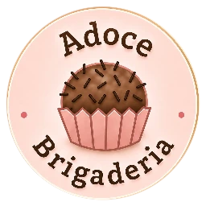
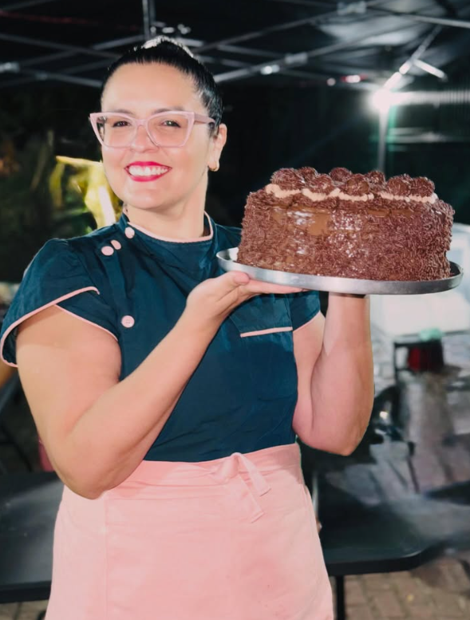
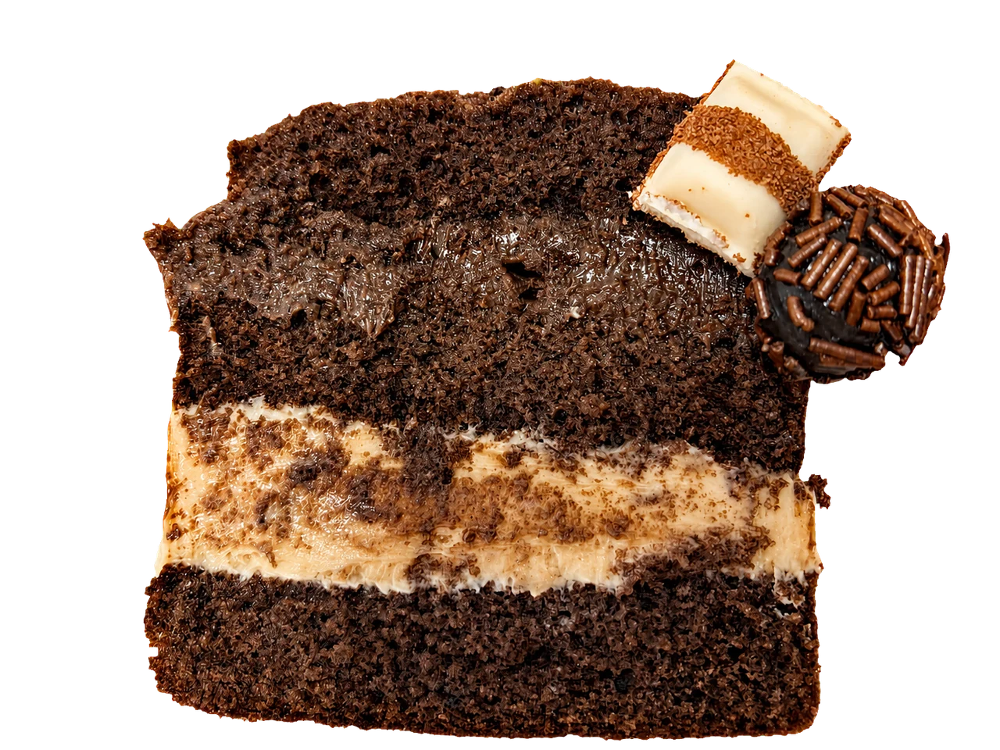
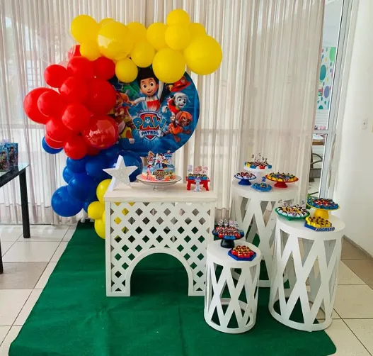

Sistema de marca e experiência · 12/08/2026

Adoce Brand Board
Doce feito com afeto, para celebrar cada momento.
01 · Essência
Próxima como a Beth. Precisa como uma boa operação.
A Adoce não é uma plataforma genérica com uma camada rosa. É uma confeitaria artesanal cuja tecnologia deve preservar afeto, reduzir esforço e cumprir o que promete.
02 · Princípio cromático
Cinco cores. Uma lógica.
As cinco cores são literais do manual. Nenhuma tela, campanha ou componente novo cria um hex próprio.
Chocolate age.
CTA, confirmação, decisão e foco.
Rosa acolhe.
Marca, campo, vínculo e proximidade.
Caramelo aponta.
Urgência, presente, atenção e próximo passo.
03 · Tipografia
Playfair fala. Inter trabalha.
A 15ª fatia é por nossa conta.
Playfair Display Bold é a voz da marca: títulos, sabores, números grandes e momentos de celebração. Inter sustenta leitura, formulários, navegação e operação.
CapaFeito pelas mãos da Beth.Título 30Fatias de hojeDestaque 22Trufado de NinhoBase 16Você paga na retirada. Nada é cobrado agora.Micro 11Última atualização · 19h4204 · Fotografia
O produto é real. A imagem também.
Fotos devem mostrar o doce que a pessoa encontrará, a mão que faz e a ocasião em que ele circula. Ajustar luz e corte é permitido; inventar produto não é.



05 · Logo
Respiro antes de efeito.
Use o arquivo oficial.Sem redesenhar, trocar tipografia, inclinar, recortar o selo ou reconstruir a ilustração.
Fundo liso.A logo nunca fica sobre foto, textura poluída ou área com contraste imprevisível.
Área de respiro.Reserve ao redor pelo menos a altura visual da palavra “Adoce” dentro do selo.
Tamanho com dignidade.Se o texto interno do selo não puder ser lido, use a assinatura tipográfica ao lado — não esmague a marca.
06 · Voz
Português de gente.
A frase ideal diz o que aconteceu, preserva a confiança e oferece uma saída.
“As fatias de hoje já acabaram. Amanhã tem mais, feito na hora.”
Limite sem culpa e sem promessa falsa.
“Primeira vez? A gente cria seu cartão na hora. Já é de casa? Ele aparece do jeito que estava.”
Identidade sem linguagem de sistema.
“Essa página não existe. Mas doce a gente tem.”
Erro com personalidade e saída.
“É por nossa conta.”
Presente é presente — nunca desconto.
“Você paga na retirada. Nada é cobrado agora.”
Ansiedade removida antes da ação.
“Carimbou errado? Dá para desfazer nos próximos 10 minutos.”
Operação segura para quem está de pé e com pressa.
07 · Componentes
Uma linguagem, quatro superfícies.
Ações
Rótulos dizem o resultado, não o nome técnico da operação.
Aviso acionável
3 pedidos esperando você
O mais antigo chegou às 18h47.
O mais antigo chegou às 18h47.
Presente
Presente liberado
Escolha uma fatia tradicional. É por nossa conta.
Cartão do Clube
Grade de cinco colunas: legível no celular e reconhecível nos dois lados do balcão.
12345
678910
11121314
08 · Superfícies
Coerentes, mas nunca misturadas.
- Desejo e compra
- Produto cedo
- WhatsApp como continuidade
- Nenhuma linguagem interna
- Pertencimento
- Progresso e presente
- Reconhecimento sem novo cadastro
- Carteira primeiro
- Disponibilidade verdadeira
- Reserva simples
- Calda por fatia
- Retirada sem surpresa
- Urgência primeiro
- Busca sempre visível
- Ações grandes
- Auditoria e prevenção de erro
09 · Mobile first
Desenhado para o dedo, não reduzido para caber.
44 px mínimos
Botões, ícones, filtros, steppers e alvos interativos precisam funcionar com uma mão, em movimento.
16 px nos campos
Evita zoom automático no iPhone e mantém a leitura estável durante compra e atendimento.
320 → 1280 px
Validar 320, 360, 375, 390, 412, 430, 768, 1024 e 1280 sem rolagem horizontal.
100dvh
Telas inteiras acompanham as barras móveis do navegador. Rodapés fixos respeitam a área segura.
Sem carrossel
Conteúdo que vende fica visível e empilhado. O celular não esconde opções atrás de gesto implícito.
Saída sempre visível
Toda tela responde “como volto?” e “qual é o próximo passo?” sem depender do botão do navegador.
10 · Guardrails
O que mantém a Adoce reconhecível e confiável.
Sempre
- Usar tokens oficiais.
- Mostrar foto real e disponibilidade real.
- Explicar motivo, alternativa e próximo passo.
- Tratar carimbo e presente como vínculo, não moeda.
- Separar cliente, Clube, Adoce Hoje e Operação.
- Testar celular primeiro e tablet na operação.
Nunca
- Declarar novo hex fora dos tokens.
- Colocar a logo sobre fundo poluído.
- Usar carrossel.
- Construir montador sem custo apurado.
- Gerar pagamento antes da separação.
- Expor métricas, dados ou rotinas internas ao cliente.
- Prometer o que o estoque ou a operação não confirmaram.